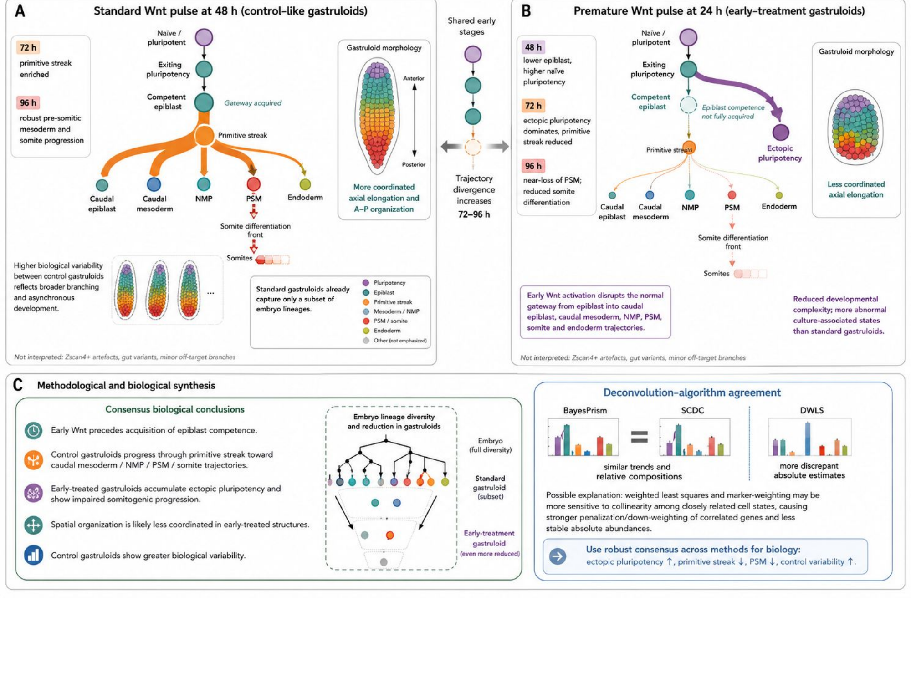

6.1 Biological insights from deconvolution algorithms applied to mouse gastruloids
Figure 6.1 contrasts a standard Wnt pulse at 48 h with a premature pulse at 24 h, at three bulk-matched time points: 48 h, 72 h and 96 h. Section 6.1.1 says what the figure can and cannot support; 1 gives the biological reading.
6.1.1 The figure and its statistical reading

Figure 6.1 is a raster illustration, not a plot of estimates. Panels A and B draw trajectories; the six bar thumbnails of panel C carry no axis, scale or value. No deconvolution output exists in this repository yet: the comparator runs of Section 5.1 are planned, not run. What follows reads the figure qualitatively and lists what its claims would need. Readings marked (ours) are not in the figure.
- The consensus is on direction, not on point estimates. Panel C reports that BayesPrism, SCDC and DWLS agree on the direction of change between arms (ectopic pluripotency up, primitive streak and pre-somitic mesoderm down in the early arm) and not on absolute abundances. Only that direction is carried into
- Why absolute abundances disagree. The figure attributes the disagreement to weighted least squares and marker weighting, which are sensitive to collinearity among closely related states. When neighbouring states have close mean profiles on the panel (candidates here, not yet checked: naïve, exiting naïve and epiblast at 48 h; pre-somitic mesoderm and somite differentiation front at 96 h), the signature is ill-conditioned, and a small change of gene weights moves mass between neighbours (3.1, condition number). (Ours.) Collinearity affects every method that inverts the same signature, BayesPrism included; it separates methods only through their weights. Panel C groups SCDC, a weighted least squares, with BayesPrism, a multinomial likelihood, and sets DWLS apart, which points at the dampened weights of DWLS (Tsoucas et al. 2019) rather than at least squares as such. Testing this needs the condition number of the panel signature at each time and the per-method estimates.
- Why direction can agree when levels do not. (Ours.) At one time both arms are deconvolved with the same reference and panel. A method bias that multiplies the proportion of a type by a fixed factor cancels in the log-ratio contrast between arms; a bias that moves mass between collinear neighbours depends on the sample and does not cancel. Proportions are also closed: a rise of ectopic pluripotency forces other types down, so “ectopic pluripotency up” and “primitive streak down” are not two independent findings. The redraw therefore reads contrasts on centred log-ratios within each sample.
- Uncertainty the claims need. (Ours.)
- A per-algorithm interval for every proportion: from the method’s own uncertainty model where it has one (BayesPrism samples a posterior), and from resampling reference cells within type otherwise, which also carries the uncertainty of the one-specimen reference (Section 2.1).
- A bootstrap over bulk replicates within arm and time, since the replicate is the unit of the arm effect, not the gene or the cell. There are three replicates per arm and time (Figure 2.1), so a resample takes only 10 distinct values per arm; the redraw shows the nine pairwise early-minus-standard differences beside the percentile interval.
- Panel C also states that control gastruloids vary more. A variance from three replicates has two degrees of freedom, and its 95 % chi-square interval spans a factor of about 150, so that claim needs more replicates or a model that pools across types and times.
- How to read agreement across methods. (Ours.) The methods share the reference, the panel and the bulk, so their errors are correlated, and agreement of three methods is not three independent confirmations. Two failure modes are shared by all of them. The early-Wnt bulk has no single-cell counterpart at any time (Section 3.4), so a state specific to that arm is forced onto the nearest reference types. And several states drawn in panels A and B (caudal epiblast, neuromesodermal progenitors) are not among the scored reference types of Table 3.2, so no deconvolution against those references can return them. Sign agreement across methods is therefore necessary, not sufficient. A proposed reporting rule for the redraw: call a direction when every method gives the same sign and, for each method, the nine replicate pairs share that sign; report a per-sample goodness of fit on the early arm beside it.
6.1.2 Biological interpretation
On the control-like arm, 72 h is primitive-streak enriched and 96 h shows pre-somitic mesoderm and somite progression. On the early Wnt arm, 48 h retains more naïve pluripotency, 72 h is dominated by ectopic pluripotency with a reduced primitive streak, and 96 h nearly loses pre-somitic mesoderm. Absolute abundances disagree across algorithms (Section 6.1.1), so we treat the direction of change (ectopic pluripotency up, primitive streak and pre-somitic mesoderm down) as the consensus, not the point estimates.